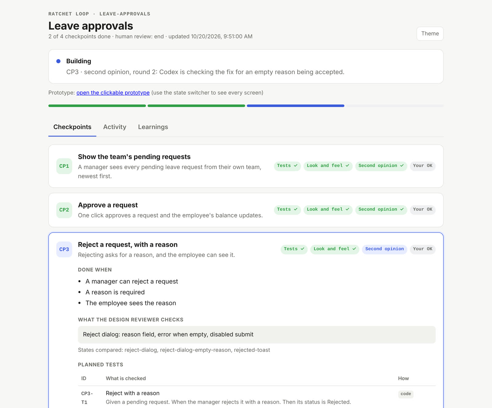
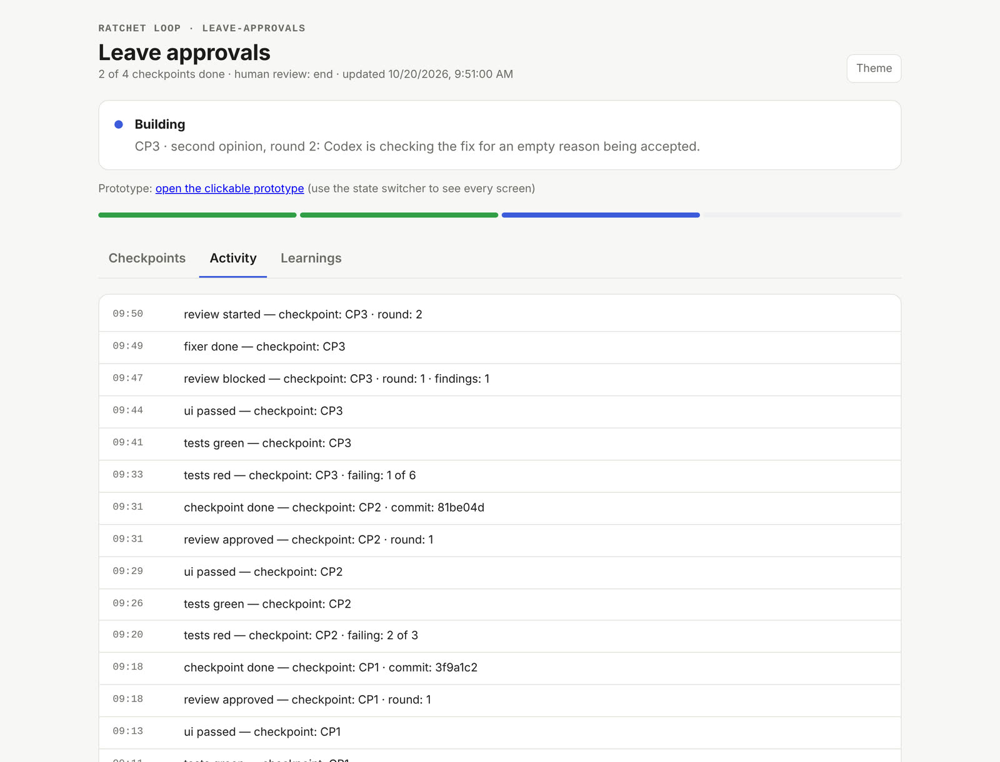

See the whole run on one page
A long run produces a lot of chat. The viewer keeps the whole run on one page, so you can see where things stand at a glance.
What the viewer shows
Every run gets a viewer. It's one web page with the plan, every test, every review round and every commit. You don't need it, since everything also shows up in the chat. But some people like to watch.


Example The real viewer, showing the leave approvals run from this page.
What's on it
A progress bar with one segment per step. The four gates for each step: Tests, Look and feel, Second opinion and Your OK. What "done" means, the planned tests, who reviewed each round, and the proof and commit for each finished step.
How to open it
Ask the agent for the viewer link. The file is at .ratchet/runs/<run>/viewer.html in your project. If Ratchet's local server is on, the page refreshes every 3 seconds.
Other tabs
Activity is a timeline of the run. Learnings lists lessons saved from past runs. New screens link to a clickable prototype. Runs built from a spec show which scenarios pass so far.
Try it on your next feature
Ask your agent to install it. Then tell it what you want to build.